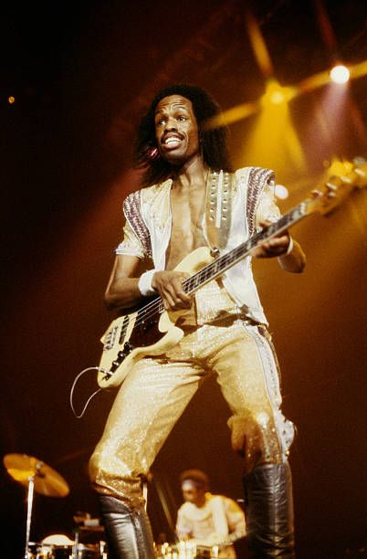

And many more members/
Al McKay
Fred White
Roland Bautista
Jessica Cleaves
Larry Dunn
Johnny Graham
Sheldon Reynolds
Kimberly Brewer
B. David Whitworth
Philip Bailey, Jr.
Ronnie Laws
Krystal Bailey
Morris Pleasure
Don Myrick
Myron McKinley
Sonny Emory
Louis Satterfield
Serg Dimitrijevic
Vadim Zilberstein
Morris O'Connor
Kim johnson
Wade Flemons
Sherry Scott
Wayne Vaughn
Don Whitehead
Michael Hariis
Bobby Gonzales
Bobby Burns, Jr.
Vance Taylor
Reggie Young
Gary Bias
Michael Beal
Daniel de los Reyes
Mike McKnight
John Paris
Robert Brookings
Freddie Ravel
Rahmlee Michael Davis
Leslie Drayton
Beloyd Taylor
Raymond Lee Brown
Jeff Bowen
John Johnson
Dick Smith
Evan Marzouk
Gordon Campbell
Maurice White
Maurice White (December 19, 1941 – February 4, 2016) was an American singer, musician, songwriter, and record producer. He was the founder, leader, main songwriter, and producer of the band Earth, Wind & Fire, and served as the band's co-lead singer with Philip Bailey. Described as a "visionary" by Vibe and a "mastermind" by Variety, White was nominated for a total of 22 Grammys, of which he won seven. He was inducted into the Rock and Roll Hall of Fame and the Vocal Group Hall of Fame as a member of Earth, Wind & Fire, and was also inducted individually into the Songwriters Hall of Fame. He additionally worked with artists such as Deniece Williams, Cher, the Emotions, Barbra Streisand, Ramsey Lewis, and Neil Diamond.
With Maurice as the bandleader and producer of most of the band's albums, EWF earned legendary status winning six Grammy Awards out of 17 nominations, a star on the Hollywood Boulevard Walk of Fame, and four American Music Awards. The group's albums have sold over 90 million copies worldwide. Other honors bestowed on Maurice as a member of the band included inductions into the Rock and Roll Hall of Fame, the Vocal Group Hall of Fame, The Songwriters Hall of Fame and The NAACP Image Awards Hall of Fame.
White brought the kalimba into mainstream use by incorporating its sound into the music of Earth, Wind & Fire. He was also responsible for expanding the group to include a full horn section at first being the Phenix Horns and then the Earth, Wind & Fire Horns. During 1996 Maurice stopped regularly touring with the band but still occasionally appeared on stage. He retained executive control of the band and was still very active in the music business, producing and recording with the band and other artists.
A website entitled www.Startalk.org was also set up in 1999 in honour of Maurice. Maurice later spoke of an ongoing affliction with Parkinson's disease. Artists such as Steven Tyler of Aerosmith, Boyz II Men, Smokey Robinson, Isaac Hayes, Michael Jackson, Eric Clapton and Tom Morello of Rage Against the Machine posted messages upon the site for White.
With EWF he appeared at several events such as the 2004 Grammy Awards Tribute to Funk. He also performed alongside Alicia Keys at Clive Davis's 2004 pre-Grammy awards party where they performed the band's 1978 hit "September".

Philip Bailey
Philip James Bailey (born May 8, 1951) is an American R&B, soul, gospel and funk singer, songwriter and percussionist, best known as an early member and one of the two lead singers (along with group founder Maurice White) of the band Earth, Wind & Fire. Noted for his four-octave vocal range and distinctive falsetto register, Bailey has won seven Grammy Awards. He was inducted into the Rock and Roll Hall of Fame and the Vocal Group Hall of Fame as a member of Earth, Wind & Fire. Bailey was also inducted into the Songwriters Hall of Fame for his work with the band.
Bailey has released several solo albums. Chinese Wall from 1984, which received a Grammy Award nomination for Best R&B Vocal Performance, Male, included the international hit, "Easy Lover", a duet with Phil Collins. "Easy Lover" won an MTV Video Music Award for Best Overall Performance in a Video in 1985 and was Grammy nominated for Best Pop Performance by a Duo or Group With Vocals.
In May 2008, Bailey was awarded an Honorary Doctorate of Music from Berklee College of Music at Berklee's Commencement Ceremony where he was the commencement speaker.

Verdine White
Verdine White (born July 25, 1951) is an American musician, best known as a founding member and bassist for the Rock and Roll Hall of Fame Band, Earth, Wind & Fire. White was placed at No. 27 on Bass Player's list of The 100 Greatest Bass Players of All Time.
As Earth, Wind & Fire's bassist since the band's inception, White has won six Grammy Awards, has been Grammy nominated seventeen times and has also been inducted into the Rock and Roll Hall of Fame and the Vocal Group Hall of Fame to name a few honors. The band has also earned more than 50 gold and platinum albums and have sold over 90 million albums worldwide.
In November 2008 White was presented with Bass Player magazine's Lifetime Achievement Award by Nathan East. On Friday, February 26, 2010 Verdine was inducted as a member of Phi Beta Sigma Fraternity at the ceremony held at the Crowne Plaza Beverly Hills Hotel in Los Angeles, California. Verdine White holds an honorary doctorate degree from the American Conservatory of Music.

Ralph Johnson
Ralph Johnson (born July 4, 1951) is an American singer, songwriter, musician and producer. Johnson is a longstanding member of the band Earth, Wind & Fire.
Born and raised in Los Angeles, from an early age Johnson developed a fascination for all things jazz. At eight years old he went on to receive his first drumming lesson. He later went on to join local bands "The Teen Turbans" and "The Masters Children".
During 1971 Johnson successfully auditioned as a drummer for another band. This one was led by a Chicago musician known as Maurice White and called Earth, Wind & Fire. With Johnson in tow the band went on to achieve monumental commercial and critical success. He later went on to be inducted as a member of Earth, Wind and Fire into the Rock and Roll Hall of Fame during 2000.

Andrew Woolfolk
Andrew Paul Woolfolk II (born October 11, 1950 in Texas, United States) is an American saxophonist. Woofolk was a longtime member of the band Earth, Wind & Fire. He has also collaborated with artists such as Deniece Williams, Stanley Turrentine, Phil Collins, Twennynine, Philip Bailey, and Level 42.
Woolfolk attended East High School in Denver, Colorado. Within 1972 he joined the band Earth, Wind & Fire as a saxophonist, going on to become a longstanding member of such. During 2017 Woolfolk was eventually inducted into the Colorado Music Hall of Fame.